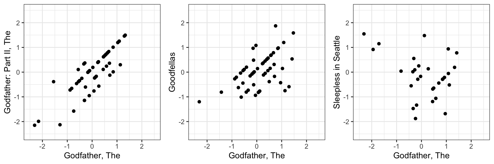
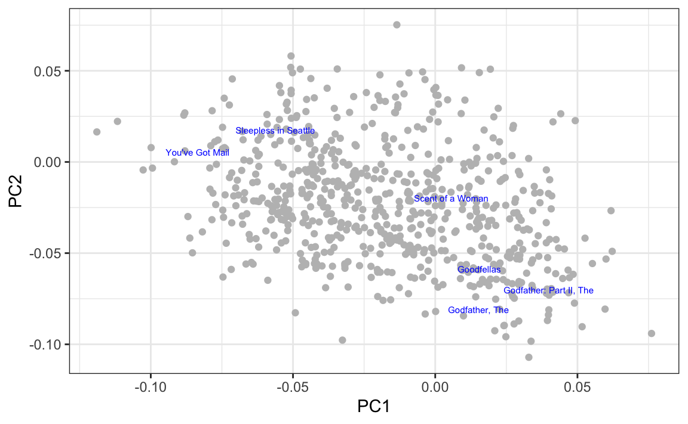

r <- sweep(y - mu - a, 2, b_reg)24 Matrix Factorization
In the previous chapter, we described how the model:
\[ Y_{i,j} = \mu + \alpha_i + \beta_j + \varepsilon_{i,j} \]
can be used to model movie ratings and help make useful predictions. This model accounts for user differences through \(\alpha_i\) and movie effects through \(\beta_j\). However, the model ignores an important source of information related to the fact that groups of movies, have similar rating patterns and groups of users have similar rating patterns as well.
To see an example of this, we compute residuals:
\[
r_{i,j} = y_{i,j} - (\hat{\mu} + \hat{\alpha}_i + \hat{\beta}_j)
\] using the mu, a and b_reg computed in the previous chapter:
and see how the residuals for three different movies correlate with The Godfather:

We see that the correlation varies from very strong to negative across the other three movies.
In this chapter, we introduce Factor Analysis, an approach that permits us to model these correlations and improve our prediction, and the Singular Value Decomposition, which permits us to fit the model. As we will see, this approach is related to principal component analysis (PCA). We describe these concepts in the context of movie recommendation systems.
24.1 Factor analysis
We start with a simple illustration. We simulate \(\varepsilon_{i,j}\) for 6 movies and 120 users and save it in e. If we examine the correlation, we notice a pattern:
cor(e)
#> Godfather Godfather 2 Goodfellas Scent of a Woman
#> Godfather 1.000 0.671 0.558 -0.527
#> Godfather 2 0.671 1.000 0.471 -0.450
#> Goodfellas 0.558 0.471 1.000 -0.888
#> Scent of a Woman -0.527 -0.450 -0.888 1.000
#> You've Got Mail -0.734 -0.649 -0.487 0.451
#> Sleepless in Seattle -0.721 -0.739 -0.505 0.475
#> You've Got Mail Sleepless in Seattle
#> Godfather -0.734 -0.721
#> Godfather 2 -0.649 -0.739
#> Goodfellas -0.487 -0.505
#> Scent of a Woman 0.451 0.475
#> You've Got Mail 1.000 0.756
#> Sleepless in Seattle 0.756 1.000It seems there is positive correlation within mob and romance movies, and negative across the two genres. In statistics, we define factors as unobserved or latent variables that are inferred from the patterns of correlations or associations between the observed variables. We can quantify a factor that distinguishes between mob and romance movies with:
q <- c(-1, -1, -1, 1, 1, 1)To determine which users prefer each genre, we can fit a linear model to each user:
Notice we use the -1 because the errors have mean 0 and we don’t need an intercept.
There is a much faster way to make this computation using linear algebra. This is because the lm function is computing the least squares estimates by taking the derivative of the sum of squares, equaling it to 0, and noting the solution \(\hat{\boldsymbol{\beta}}\) satisfies:
\[
(\mathbf{q}^\top\mathbf{q}) \, \hat{\boldsymbol{\beta}} = \mathbf{q}^\top \mathbf{y}
\] with \(\mathbf{y}\) the row of e passed to y in the apply function. Because \(\mathbf{q}\) does not change for each user, rather than have lm recompute the equation for each user, we can perform the calculation on each column of \(e\) to get the \(\beta_j\) for all users \(j\) like this:
The histogram below shows there are three type of users: those that love mob movies and hate romance movies, those that don’t care, and those that love romance movies and hate mob movies.
To see that we can approximate \(\varepsilon_{i,j}\) with $p_iq_j we convert the vectors to matrices and use linear algebra:
However, after removing this mob/romance effect, we still see structure in the correlation:
cor(e - p %*% t(q))
#> Godfather Godfather 2 Goodfellas Scent of a Woman
#> Godfather 1.000 0.185 -0.545 0.557
#> Godfather 2 0.185 1.000 -0.618 0.594
#> Goodfellas -0.545 -0.618 1.000 -0.671
#> Scent of a Woman 0.557 0.594 -0.671 1.000
#> You've Got Mail -0.280 -0.186 0.619 -0.641
#> Sleepless in Seattle -0.198 -0.364 0.650 -0.656
#> You've Got Mail Sleepless in Seattle
#> Godfather -0.280 -0.198
#> Godfather 2 -0.186 -0.364
#> Goodfellas 0.619 0.650
#> Scent of a Woman -0.641 -0.656
#> You've Got Mail 1.000 0.353
#> Sleepless in Seattle 0.353 1.000This structure seems to be driven by Al Pacino being in the movie or not. This implies we could add another factor:
We can then obtain estimates for each user:
Note that we use the transpose t because apply binds results into columns and we want a row for each user.
Our approximation based on two factors does a even better job of predicting how our residuals deviate from 0:
This analysis provides insights into the process generating our data. Note that it also provides compression: the \(120 \times 6\) matrix \(\boldsymbol{\varepsilon}\), with 720 observation, is well approximated by a matrix multiplication of a \(120 \times 2\) matrix \(\mathbf{P}\) and a \(6 \times 2\) matrix \(\mathbf{Q}\), a total of 252 parameters.
Our approximation with two factors can be written as:
\[ \varepsilon_{i,j} \approx p_{i,1}q_{j,1} + p_{i,2}q_{j,2} \mbox{ or } \boldsymbol{\varepsilon} = \mathbf{P}\mathbf{Q}^\top \]
In our example with simulated data, we deduced the factors \(\mathbf{p}_1\) and \(\mathbf{p}_2\) from the sample correlation and our knowledge of movies. These ended up working well. However, in general deducing factors is not this easy. Furthermore, factors that provide good approximation might be more complicated than containing just two values. For example, The Godfather III might be considered both a mob and romance movie and we would not know what value to assign it in q.
So, can we estimate the factors? A challenge is that if \(\mathbf{P}\) is unknown our model is no longer linear: we can use lm to estimate both \(\mathbf{P}\) and \(\mathbf{Q}\). In the next section, we describe a technique that permits us to estimate to this.
24.2 Connection to PCA
Notice that if we perform PCA on the matrix \(\boldsymbol{\varepsilon}\), we obtain a transformation \(\mathbf{V}\) that permits us to rewrite:
\[ \boldsymbol{\varepsilon} = \mathbf{Z} \mathbf{V}^\top \]
with \(\mathbf{Z}\) the matrix of principal components.
Let’s perform PCA and examine the results:
pca <- prcomp(e, center = FALSE)First, notice that the first two PCs explain over 95% of the variability:
pca$sdev^2/sum(pca$sdev^2)
#> [1] 0.6939 0.1790 0.0402 0.0313 0.0303 0.0253Next, notice that the first column of \(\mathbf{V}\):
pca$rotation[,1]
#> Godfather Godfather 2 Goodfellas
#> 0.306 0.261 0.581
#> Scent of a Woman You've Got Mail Sleepless in Seattle
#> -0.570 -0.294 -0.300is assigning positive values to the mob movies and negative values to the romance movies.
The second column:
pca$rotation[,2]
#> Godfather Godfather 2 Goodfellas
#> -0.354 -0.377 0.382
#> Scent of a Woman You've Got Mail Sleepless in Seattle
#> -0.437 0.448 0.442is coding for Al Pacino movies.
PCA is automatically finding what we deduced with our knowledge of movies. This is not a coincidence.
Assume that data \(\mathbf{Y}\) follows the model:
\[ Y_{i,j} = \sum_{k=1}^K p_{i,k}q_{j,k} + \varepsilon_{i,j} \]
If we define the matrices \(\mathbf{Y}\) and \(\boldsymbol{\varepsilon}\) to have \(y_{i,j}\) and \(\varepsilon_{i,j}\) in the \(i\)th row and \(j\)th column, respectively, and \(\mathbf{P}\) and \(\mathbf{Q}\) to have entries \(p_{i,k}\) and \(q_{i,k}\) in the \(i\)th and \(k\)th column, respectively, we can rewrite the model as:
\[ \mathbf{Y} = \mathbf{P}\mathbf{Q} ^\top + \boldsymbol{\varepsilon} \]
Notice this model is not identifiable since we can multiply the \(\mathbf{P}\) by any positive constant and obtain the same model by dividing \(\mathbf{Q}\) by this same constant. To avoid this, we impose the constraint that \(\mathbf{Q}\) is orthogonal:
\[ \mathbf{Q}^\top\mathbf{Q} = \mathbf{I} \]
The first \(K\) columns of the principal components and associated rotation provide estimates of \(\mathbf{P}\) and \(\mathbf{Q}\) respectively.
24.3 Case study: movie recommendations
Note that if we look at the correlation structure of the movies for which we simulated data in the previous sections, we see structure as well:
#> Godfather, The Godfather: Part II, The
#> Godfather, The 1.000 0.842
#> Godfather: Part II, The 0.842 1.000
#> Goodfellas 0.521 0.507
#> Scent of a Woman 0.323 0.209
#> You've Got Mail -0.405 -0.213
#> Sleepless in Seattle -0.334 -0.295
#> Goodfellas Scent of a Woman You've Got Mail
#> Godfather, The 0.5208 0.3231 -0.405
#> Godfather: Part II, The 0.5065 0.2091 -0.213
#> Goodfellas 1.0000 -0.0277 -0.254
#> Scent of a Woman -0.0277 1.0000 -0.312
#> You've Got Mail -0.2542 -0.3119 1.000
#> Sleepless in Seattle -0.4484 -0.4405 0.455
#> Sleepless in Seattle
#> Godfather, The -0.334
#> Godfather: Part II, The -0.295
#> Goodfellas -0.448
#> Scent of a Woman -0.441
#> You've Got Mail 0.455
#> Sleepless in Seattle 1.000This implies that we should be able to improve the predictions made in the previous chapter if we use this information. Ratings on The Godfather should inform ratings for the The Godfather II, for example. But what other patterns might be useful for prediction?
We will rewrite the model from the previous chapter to include factors to explain similarities between movies:
\[ Y_{i,j} = \mu + \alpha_i + \beta_j + \sum_{k=1}^K p_{i,k}q_{j,k} +\varepsilon_{i,j} \]
Unfortunately, we can’t fit this model with prcomp due to the missing values. We introduce the missMDA package that provides an approach to fit such models when matrix entries are missing, a very common occurrence in movie recommendations, through the function imputePCA. Also, because there are small sample sizes for several movie pairs, it is useful to regularize the \(p\)s. The imputePCA function also permits regularization.
We use the estimates for \(\mu\), the \(\alpha\)s and \(\beta\)s from the previous chapter, and estimate two factors (ncp = 2). We fit the model to movies rated more than 25 times, include Scent of a Woman, which does not meet this criterion, because we previously used it as an example. Finally, we use regularization by setting the parameter coeff.ridge to the same value used to estimate the \(\beta\)s.
To see how much we improve our previous prediction, we construct a matrix with the ratings in the test set:
y_test <- select(test_set, movieId, userId, rating) |>
pivot_wider(names_from = movieId, values_from = rating) |>
column_to_rownames("userId") |>
as.matrix()and construct our predictor obtained with imputePCA. We start by constructing the predictor from the previous chapter:
Then we adjust the prediction to include the imputed residuals for the test set:
pred[,ind] <- clamp(pred[,ind] + imputed$completeObs)We see that our prediction improves:
We note that further improvements can be obtained by 1) optimizing the regularization penalty, 2) considering more than 2 factors, and 3) accounting for the fact that a missing rating provides information: people tend to not watch movies they know they won’t like.
24.3.1 Visualizing factors
We can compute the first two principal components used for the prediction using prcomp.
pca <- prcomp(imputed$completeObs, center = FALSE, rank. = 3)By adding the movie names to the rotation matrix:
and visually explore the results, we see that the mob movies discussed above are close to each other, as are the romance movies without Al Pacino.

By looking at the highest and lowest values for the first principal component, we see a meaningful pattern. The first PC shows the difference between Hollywood blockbusters on one side:
#> [1] "Armageddon" "Pearl Harbor"
#> [3] "X2: X-Men United" "Dark Knight Rises, The"
#> [5] "X-Men" "Independence Day (a.k.a. ID4)"
#> [7] "Con Air" "I, Robot"
#> [9] "World Is Not Enough, The" "Spider-Man 2"and critically acclaimed movies on the other:
#> [1] "2001: A Space Odyssey" "American Psycho"
#> [3] "Royal Tenenbaums, The" "Harold and Maude"
#> [5] "Apocalypse Now" "Fear and Loathing in Las Vegas"
#> [7] "Mulholland Drive" "Clockwork Orange, A"
#> [9] "English Patient, The" "Dr. Strangelove or: How I L..."24.4 Singular Value Decomposition
The analysis performed here with PCA is often performed with a related technique called the Singular Value Decomposition (SVD). The SVD theorem states that any \(N\times p\) matrix can be written as:
\[ \mathbf{Y} = \mathbf{U}\mathbf{D}\mathbf{V}^\top \] With \(\mathbf{U}\) and orthogonal \(N\times p\) matrix, \(\mathbf{V}\) an orthogonal \(p \times p\) matrix, and \(\mathbf{D}\) a diagonal matrix with \(d_{1,1} \geq d_{2,2} \geq \dots \geq d_{p,p}\). SVD is related to PCA because we can show that \(\mathbf{V}\) is the rotation that gives us principal components. This implies that \(\mathbf{U}\mathbf{D}\) are the principal components. This also implies that if you square the diagonal entries of \(\mathbf{D}\), you obtain the sum of squares of the principal components since:
\[ \mathbf{U}^\top\mathbf{D}\mathbf{U} = \mathbf{D}^2 \]
In R, we can obtain the SVD using the function svd. To see the connection to PCA, notice that:
In the exercises, we show that s$u %*% diag(s$d) can be computed more efficiently as sweep(s$u, 2, s$d, "*").
24.5 Exercises
In this exercise set, we use the singular value decomposition (SVD) to estimate factors in an example related to the first application of factor analysis: finding factors related to student performance in school.
We construct a dataset that represents grade scores for 100 students in 24 different subjects. The overall average has been removed so this data represents the percentage points each student received above or below the average test score. So a 0 represents an average grade (C), a 25 is a high grade (A+), and a -25 represents a low grade (F). You can simulate the data like this:
set.seed(1987)
n <- 100
k <- 8
Sigma <- 64 * matrix(c(1, .75, .5, .75, 1, .5, .5, .5, 1), 3, 3)
m <- MASS::mvrnorm(n, rep(0, 3), Sigma)
m <- m[order(rowMeans(m), decreasing = TRUE),]
y <- m %x% matrix(rep(1, k), nrow = 1) +
matrix(rnorm(matrix(n * k * 3)), n, k * 3)
colnames(y) <- c(paste(rep("Math",k), 1:k, sep="_"),
paste(rep("Science",k), 1:k, sep="_"),
paste(rep("Arts",k), 1:k, sep="_"))Our goal is to describe the student performances as succinctly as possible. For example, we want to know if these test results are all simply random independent numbers. Are all students just about as good? Does being good in one subject imply one will be good in another? How does the SVD help with all this? We will go step by step to show that with just three relatively small pairs of vectors, we can explain much of the variability in this \(100 \times 24\) dataset.
You can visualize the 24 test scores for the 100 students by plotting an image:
my_image <- function(x, zlim = range(x), ...){
colors = rev(RColorBrewer::brewer.pal(9, "RdBu"))
cols <- 1:ncol(x)
rows <- 1:nrow(x)
image(cols, rows, t(x[rev(rows),,drop=FALSE]), xaxt = "n", yaxt = "n",
xlab="", ylab="", col = colors, zlim = zlim, ...)
abline(h=rows + 0.5, v = cols + 0.5)
axis(side = 1, cols, colnames(x), las = 2)
}
my_image(y)1. How would you describe the data based on this figure?
- The test scores are all independent of each other.
- The students that test well are at the top of the image and there seems to be three groupings by subject.
- The students that are good at math are not good at science.
- The students that are good at math are not good at humanities.
2. You can examine the correlation between the test scores directly like this:
Which of the following best describes what you see?
- The test scores are independent.
- Math and science are highly correlated, but the humanities are not.
- There is high correlation between tests in the same subject, but no correlation across subjects.
- There is a correlation among all tests, but higher if the tests are in science and math and even higher within each subject.
3. Remember that orthogonality means that \(U^{\top}U\) and \(V^{\top}V\) are equal to the identity matrix. This implies that we can also rewrite the decomposition as:
\[ \mathbf{Y V} = \mathbf{U D} \mbox{ or } \mathbf{U}^{\top}\mathbf{Y} = \mathbf{D V}^{\top}\]
We can think of \(\mathbf{YV}\) and \(\mathbf{U}^{\top}\mathbf{V}\) as two transformations of \(\mathbf{Y}\) that preserve the total variability.
Use the function svd to compute the SVD of y. This function will return \(U\), \(V\) and the diagonal entries of \(D\).
You can check that the SVD works by typing:
Compute the sum of squares of the columns of \(Y\) and store them in ss_y. Then compute the sum of squares of columns of the transformed \(\mathbf{YV}\) and store them in ss_yv. Confirm that sum(ss_y) is equal to sum(ss_yv).
4. We see that the total sum of squares is preserved. This is because \(\mathbf{V}\) is orthogonal. Now to start understanding how \(\mathbf{YV}\) is useful, plot ss_y against the column number and then do the same for ss_yv. What do you observe?
5. We see that the variability of the columns of \(\mathbf{YV}\) is decreasing. Furthermore, we see that, relative to the first three, the variability of the columns beyond the third is almost 0. Now notice that we didn’t have to compute ss_yv because we already have the answer. How? Remember that \(\mathbf{YV} = \mathbf{UD}\) and because \(\mathbf{U}\) is orthogonal, we know that the sum of squares of the columns of \(\mathbf{UD}\) are the diagonal entries of \(\mathbf{D}\) squared. Confirm this by plotting the square root of ss_yv versus the diagonal entries of \(\mathbf{D}\).
6. From the above we know that the sum of squares of the columns of \(\mathbf{Y}\) (the total sum of squares) add up to the sum of s$d^2, and that the transformation \(\mathbf{YV}\) gives us columns with sums of squares equal to s$d^2. Now compute what percent of the total variability is explained by just the first three columns of \(\mathbf{YV}\).
7. We see that almost 99% of the variability is explained by the first three columns of \(\mathbf{YV} = \mathbf{UD}\). So we get the sense that we should be able to explain much of the variability and structure we found while exploring the data with a few columns. Before we continue, let’s show a useful computational trick to avoid creating the matrix diag(s$d). To motivate this, we note that if we write \(\mathbf{U}\) out in its columns \([\mathbf{u}_1, \mathbf{u}_2, \dots, \mathbf{u}_p]\), then \(\mathbf{UD}\) is equal to:
\[ \mathbf{UD} = [\mathbf{u}_1 d_{1,1}, \mathbf{u}_2 d_{2,2}, \dots, \mathbf{u}_p d_{p,p}] \]
Use the sweep function to compute \(UD\) without constructing diag(s$d) and without using matrix multiplication.
8. We know that \(\mathbf{u}_1 d_{1,1}\), the first column of \(\mathbf{UD}\), has the most variability of all the columns of \(\mathbf{UD}\). Earlier we saw an image of \(Y\):
my_image(y)in which we can see that the student to student variability is quite large and that it appears that students that are good in one subject are good in all. This implies that the average (across all subjects) for each student should explain a lot of the variability. Compute the average score for each student and plot it against \(\mathbf{u}_1 d_{1,1}\), and describe what you find.
9. We note that the signs in SVD are arbitrary because:
\[ \mathbf{U D V}^{\top} = (-\mathbf{U}) D (-\mathbf{V})^{\top} \]
With this in mind, we see that the first column of \(\mathbf{UD}\) is almost identical to the average score for each student except for the sign.
This implies that multiplying \(\mathbf{Y}\) by the first column of \(\mathbf{V}\) must be performing a similar operation to taking the average. Make an image plot of \(\mathbf{V}\) and describe the first column relative to others and how this relates to taking an average.
10. We already saw that we can rewrite \(UD\) as:
\[ \mathbf{u}_1 d_{1,1} + \mathbf{u}_2 d_{2,2} + \dots + \mathbf{u}_p d_{p,p} \]
with \(\mathbf{u}_j\) the j-th column of \(\mathbf{U}\). This implies that we can rewrite the entire SVD as:
\[\mathbf{Y} = \mathbf{u}_1 d_{1,1} \mathbf{v}_1 ^{\top} + \mathbf{u}_2 d_{2,2} \mathbf{v}_2 ^{\top} + \dots + \mathbf{u}_p d_{p,p} \mathbf{v}_p ^{\top}\]
with \(\mathbf{V}_j\) the jth column of \(\mathbf{V}\). Plot \(\mathbf{u}_1\), then plot \(\mathbf{v}_1^{\top}\) using the same range for the y-axis limits. Then make an image of \(\mathbf{u}_1 d_{1,1} \mathbf{v}_1 ^{\top}\) and compare it to the image of \(\mathbf{Y}\). Hint: Use the my_image function defined above and use the drop=FALSE argument to assure the subsets of matrices are matrices.
11. We see that with just a vector of length 100, a scalar, and a vector of length 24, we actually come close to reconstructing the original \(100 \times 24\) matrix. This is our first matrix factorization:
\[
\mathbf{Y} \approx d_{1,1} \mathbf{u}_1 \mathbf{v}_1^{\top}
\] We know it explains s$d[1]^2/sum(s$d^2) * 100 percent of the total variability. Our approximation only explains the observation that good students tend to be good in all subjects. But another aspect of the original data that our approximation does not explain was the higher similarity we observed within subjects. We can see this by computing the difference between our approximation and original data and then computing the correlations. You can see this by running this code:
Now that we have removed the overall student effect, the correlation plot reveals that we have not yet explained the within subject correlation nor the fact that math and science are closer to each other than to the arts. So let’s explore the second column of the SVD. Repeat the previous exercise but for the second column: Plot \(\mathbf{u}_2\), then plot \(\mathbf{v}_2^{\top}\) using the same range for the y-axis limits, then make an image of \(\mathbf{u}_2 d_{2,2} \mathbf{v}_2 ^{\top}\) and compare it to the image of resid.
12. The second column clearly relates to a student’s difference in ability in math/science versus the arts. We can see this most clearly from the plot of s$v[,2]. Adding the matrix we obtain with these two columns will help with our approximation:
\[ \mathbf{Y} \approx d_{1,1} \mathbf{u}_1 \mathbf{v}_1^{\top} + d_{2,2} \mathbf{u}_2 \mathbf{v}_2^{\top} \]
We know it will explain:
percent of the total variability. We can compute new residuals like this:
and see that the structure that is left is driven by the differences between math and science. Confirm this by plotting \(\mathbf{u}_3\), then plot \(\mathbf{v}_3^{\top}\) using the same range for the y-axis limits, then make an image of \(\mathbf{u}_3 d_{3,3} \mathbf{v}_3 ^{\top}\) and compare it to the image of resid.
13. The third column clearly relates to a student’s difference in ability in math and science. We can see this most clearly from the plot of s$v[,3]. Adding the matrix we obtain with these two columns will help with our approximation:
\[ \mathbf{Y} \approx d_{1,1} \mathbf{u}_1 \mathbf{v}_1^{\top} + d_{2,2} \mathbf{u}_2 \mathbf{v}_2^{\top} + d_{3,3} \mathbf{u}_3 \mathbf{v}_3^{\top} \]
We know it will explain:
percent of the total variability. We can compute new residuals like this:
We no longer see structure in the residuals: they seem to be independent of each other. This implies that we can describe the data with the following model:
\[ \mathbf{Y} = \mathbf{u}_1 \mathbf{v}_1^{\top} + d_{2,2} \mathbf{u}_2 \mathbf{v}_2^{\top} + d_{3,3} \mathbf{u}_3 \mathbf{v}_3^{\top} + \varepsilon \]
with \(\varepsilon\) a matrix of independent identically distributed errors. This model is useful because we summarize \(100 \times 24\) observations with \(3 \times (100+24+1) = 375\) numbers. Furthermore, the three components of the model have useful interpretations: 1) the overall ability of a student, 2) the difference in ability between the math/sciences and arts, and 3) the remaining differences between the three subjects. The sizes \(d_{1,1}, d_{2,2}\) and \(d_{3,3}\) tell us the variability explained by each component. Finally, note that the components \(d_{j,j} \mathbf{u}_j \mathbf{v}_j^{\top}\) are equivalent to the jth principal component.
Finish the exercise by plotting an image of \(Y\), an image of \(d_{1,1} \mathbf{u}_1 \mathbf{v}_1^{\top} + d_{2,2} \mathbf{u}_2 \mathbf{v}_2^{\top} + d_{3,3} \mathbf{u}_3 \mathbf{v}_3^{\top}\) and an image of the residuals, all with the same zlim.